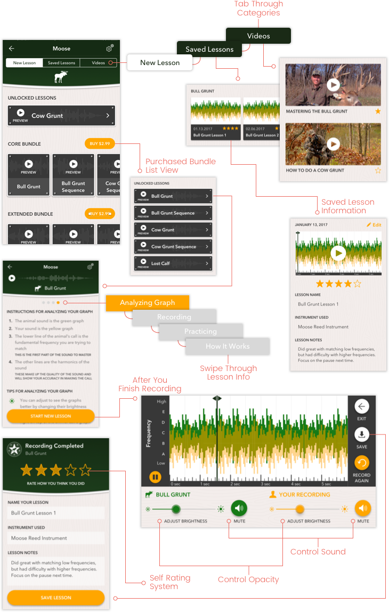

The Call Tuner app is a tool created for hunters to learn how to master various animal calls that are used to increase their success while hunting. While all other hunting call apps only play the animal calls, Call Tuner actually teaches the users how to perform the calls themselves. The app allows users to record themselves alongside the animal and compare their success through the use of frequency graphs. They can also save their recordings to track their progress and view helpful tips and videos to ensure their success.

Research
We conducted two rounds of user interviews for this project, one was carried out at the very beginning before we had designed or developed anything, and the other was right before we launched the app.
The first round of user testing was focused on gathering as much information as possible from the hunters when it came to their best practices for learning how to imitate various animal calls. Since there weren’t any direct competitors on the market at that time, we were given the opportunity to create a tool that’s uniquely tailored to meet the needs of hunters from all experience levels.
During our second wave of user interviews, we provided the participants with a high fidelity prototype and tested the overall functionality and success of the features we implemented. Since there was so many unknown variables at the beginning, we were able to validate our hypotheses and make any necessary changes before the app was launched.
UI & Interactions

Design
Since the client hadn’t created a brand yet, I was given the opportunity to work alongside her and assist in establishing one by pulling influences I used in the app’s design direction.
We wanted to create a masculine tone by emphasizing the direction specifically with the hunter in mind. The design aesthetic pulls from colors and textures inspired from nature and is intended to resemble signs hunters see while they are out on a hunt.
It was very important that the overall layout was easy to understand and was presented in a way that would be familiar and relatable to our older user audience. Keeping that in mind, for any feature I included that is considered to be more of a recent design trend or behavior, I created simple onboarding screens that instructed users on the actions they would be expected to perform.
Challenges
A major challenge I faced on this project was dealing with my lack of knowledge on the subject of hunting and the frequency graphs that the client wanted us to use for the recordings. Considering I had never even hunted before, let alone attempt to perform a hunting call, I spent a great deal of time outside of working hours researching these topics for my own benefit.
Additional challenges arose while I was designing the flow for when a user is participating in a lesson and recording themselves performing an animal call. There were two major issues I was facing: arranging all of the content so that it wasn’t overwhelming but was kept to a single screen without any scroll, and figuring out what could be done to better assist users when they are comparing their recording to the original animal call since the frequency graphs can be difficult to read.
After a few brainstorming sessions, I ended up resolving the issues by allowing users to mute either themselves, the animal recording, or both during playback and by giving them control to adjust the opacity of both the recordings’ graphs.